<!DOCTYPE html PUBLIC "-//W3C//DTD XHTML 1.0 Transitional//EN" "http://www.w3.org/TR/xhtml1/DTD/xhtml1-transitional.dtd">
<html xmlns="http://www.w3.org/1999/xhtml">
<head>
<meta http-equiv="Content-Type" content="text/html; charset=iso-8859-1" />
<meta http-equiv="Content-Style-Type" content="text/css" />
<meta http-equiv="Content-Script-Type" content="text/javascript" />
<meta http-equiv="Content-Language" content="en-us" />
<meta name="Description" content="Aqueous phosphates" />
<meta name="Keywords" content="phosphate,phosphoric,bone,Posner" />
<meta name="author" content="martin chaplin: martin.chaplin@btinternet.com" />

<title>Aqueous phosphate</title>
<script language="javascript" type="text/javascript" src="head.js"></script>
</head>
<noscript>
Your browser does not support JavaScript!
</noscript>

<head>
<link rel="shortcut icon" href="/water/favicon.ico" type="image/x-icon" />
<link rel="ToC" href="/water/water_structure_science.html" />
<link rel="stylesheet" href="water.css" type="text/css" />

</head>
<body onload="mm_preloadImages('images/seab1.gif','images/seab3.gif','images/seab4.gif','images/top2.gif', 'images/top3.gif')">
<a name="top" id="top"></a>
<div style="width:761px; height:93px; background-color:#006868;padding-top:3px;border:0px;margin:0px;">
  <div style="padding:0px;border:0px;margin:0px;padding-left:3px;width:140px; height:22px; background-color:#006868; float:left; display:inline;">
    <form class="quicklinkform" action=" ">
      <label for="&rdquo;menu1&rdquo;"></label>
      <select class="quicklink"
            onchange="mm_jumpMenu('parent',this,0)" name="menu1" id="&rdquo;menu1&rdquo;">
       <option  value="index.html" selected="selected">Quick links</option>
        <option value="index.html">......................................</option>
        <option value="water_molecule.html">Water molecule</option>
        <option value="water_hydrogen_bonding.html">hydrogen-bonding</option>
        <option value="water_phase_diagram.html">Phase diagram</option>
        <option value="water_vibrational_spectrum.html">Water spectrum</option>
        <option value="water_dissociation.html">Dissociation</option>
        <option value="water_anomalies.html">Anomalies</option>
        <option value="water_properties.html">Water properties</option>
        <option value="index.html">......................................</option>
        <option value="clusters_overview.html">Water clusters</option>
        <option value="protein_hydration.html">Protein hydration</option>
        <option value="hydrocolloids_gums.html">Hydrocolloids</option>
        <option value="ion_hydration.html">Ions</option>
        <option value="index.html">......................................</option>
        <option value="water_structure_science.html">Table of Contents</option>
        <option value="water_sitemap.html">Site map</option>
</select>
</form>
</div>
  <div style="padding:0px;border:0px;margin:0px; height:22px; background-color:#006868; float:left; display:inline;"><a href="search.html" onmouseout="mm_swapImgRestore()" onmouseover="mm_swapImage('search','','images/seab1.gif',1)"></a><a href="water_sitemap.html"></a><a href="/php-cgiwrap/water/pfp.php3?page=http://water.lsbu.ac.uk/water/aqueous_phosphate.html" onmouseout="mm_swapImgRestore()" onmouseover="mm_swapImage('printer','','images/seab4.gif',1)"  ></a><a href="add1.html"></a></div>
  <map name="topmap" id="topmap">
    <area shape="poly" coords="322,42,429,42,429,61,322,61" href="martin_chaplin.html" title="Go to my page" alt="Go to my page" onmouseout="mm_swapImgRestore()" onmouseover="mm_swapImage('topi','','images/top3.gif',1)"  />
      <area shape="poly" coords="553,3,554,30,693,30,717,8,747,32,717,56,690,33,204,35,204,3" href="water_structure_science.html" title="Go to Water Structure and Science site contents" alt="Water Structure and Science" onmouseout="mm_swapImgRestore()" onmouseover="mm_swapImage('topi','','images/top2.gif',1)" />
</map>
  <div style="padding:0px;border:0px; margin-left:3px; width:755px; background-color:#006868;"></div>
</div>
<div style="width:761px; background-color:#006868;padding:0px;border:0px;margin:0px;">
  <div style="width:751px; background-image:url('images/bg.gif');margin-left:3px;padding-left:4px;border:0px;padding-top:0px;padding-bottom:0px; background-color:#FFFae2;">
   <!-- print begin -->
	  <figure  class="floatright">
      <figcaption>
        <p align="center">&nbsp;</p>
        <p align="center">&nbsp;Phosphoric acid and its anions</p>
        <p align="center">&nbsp;</p>
      </figcaption>
    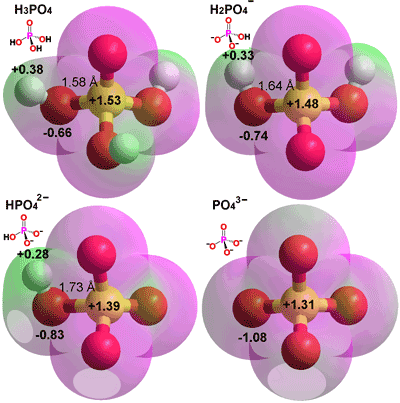 </figure>
    <h1>Aqueous phosphate</h1>
    <p>Phosphorus has a central role in life's processes.</p>
    <p>&nbsp;</p>
    <p><span class="style16"> </span><a href="water_molecule.html">The water molecule</a></p>
    <p><span class="style16"> </span><a href="aqueous_hydrogen_halides.html">Aqueous hydrogen halides</a></p>
    <p><span class="style16"></span><a href="aqueous_h2s.html"> Aqueous hydrogen sulfide</a> </p>
    <p><span class="style16"></span><strong> </strong><a href="aqueous_ammonia.html">Aqueous ammonia</a> </p>
    <p><span class="style16"></span><strong> </strong><a href="aqueous_borate.html">Aqueous borate</a></p>
    <p><a href="#p"><span class="style16"></span> Phosphorus</a></p>
    <p><a href="#h3po4"><span class="style16"></span> Orthophosphoric acid</a></p>
    <p><a href="#h3po3"><span class="style16"></span> Phosphorous acid</a></p>
    <p><a href="#h3po2"><span class="style16"></span> Phosphinic acid</a> </p>
    <p><a href="#hap"><span class="style16"></span> Hydroxyapatite and bone</a></p>
    <h2><a name="p" id="p"></a>Phosphorus</h2>
    <p>Phosphorus (P) has atomic number 15 with electrons (1s<sup>2</sup>2s<sup>2</sup>2p<sup>6</sup>3s<sup>2</sup>3p<sup>3</sup>3d<sup>0</sup>). It can have an expanded octet, because it can shift it's outer-shell 3s<sup>2</sup> electrons  to an unoccupied 3d obital (to give 1s<sup>2</sup>2s<sup>2</sup>2p<sup>6</sup>3s<sup>1</sup>3p<sub>x</sub><sup>1</sup>3p<sub>y</sub><sup>1</sup></p>
    <p>3p<sub>z</sub><sup>1</sup>3d<sup>1</sup>). As the atom is large, it can thus form five bonds (P<sup class="style16">V</sup>) (e.g., PF<sub>5</sub>, PCl<sub>5</sub>). This is sp<sup>3</sup>d hybridization and results in a triangular  bipyramidal shape of electrons and is nonpolar. Nitrogen cannot expand its octet since it has no 3d orbitals in its outer shell, and additionally, it is too small to allow five atoms to surround it.	  Phosphorus has several allotropes (e.g., white cubic P<sub>4</sub>, red amorphous, black ß-metallic). Phosphorus readily reacts exothermically with oxygen (see <a href="#burn">below</a>) to form phosphates in dimeric and polymeric forms using P-O-P linkages.</p>
<h2><a name="h3po4" id="h3po"></a>Orthophosphoric acid </h2>
    <p>Pure, anhydrous phosphoric acid (H<sub>3</sub>PO<sub>4</sub>,  melting point 42.35&nbsp;&deg;C, boiling point   212&nbsp;&deg;C, density  1880  kg  &#739; m<sup>&minus;3</sup>), usually called just phosphoric acid, is a colorless, monoclinic, crystalline compound. <sup><a href="#a" name="ba" id="ba">a</a></sup> It is miscible with  water with the clear, colorless, viscous, and gummy, 85% by-weight (melting point 21&nbsp;&deg;C,  boiling point   ~ 260&nbsp;&deg;C, density  1687  kg  &#739; m<sup>&minus;3</sup>) being the commonly found concentrated acid. It can be manufactured by treating phosphate rock with mineral acid;, e.g., calcium hydroxyapatite with <a href="aqueous_h2S.html#h2so4" title="Sulfuric acid">sulfuric acid</a>, with the resultant calcium sulfate filtered out.</p>
    <p>&nbsp;</p>
    <p align="center">Ca<sub>5</sub>(PO<sub>4</sub>)<sub>3</sub>OH + 5 H<sub>2</sub>SO<sub>4</sub> &rarr; 3 H<sub>3</sub>PO<sub>4</sub> + 5 CaSO<sub>4</sub>&darr; + H<sub>2</sub>O</p>
    <p align="center">Ca<sub>10</sub>(PO<sub>4</sub>)<sub>6</sub>F<sub>2</sub> + 10 H<sub>2</sub>SO<sub>4</sub> + 20 H<sub>2</sub>O &rarr; 6 H<sub>3</sub>PO<sub>4</sub> + 2 HF + 10 CaSO<sub>4</sub>.2H<sub>2</sub>O&darr;</p>
    <p align="center">&nbsp;</p>
    <figure  class="floatleft">
      <figcaption>
        <p align="center"><a name="p4o6" id="p4o6"></a>Phosphorus trioxide, P<sub>4</sub>O<sub>6</sub></p>
        <p align="center">and phosphorus pentoxide, P<sub>4</sub>O<sub>10</sub></p>
        <p align="center">&nbsp;</p>
      </figcaption>
      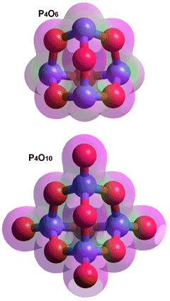</figure>
    <p>&nbsp;</p>
    <p>Caustic phosphorus pentoxide is produced by burning white phosphorus in plentiful air. It is very deliquescent, and the strongest known dehydration agent below 100&nbsp;&deg;C. These reactions are not reversible,</p>
    <p>&nbsp;</p>
    <p align="right"><a name="burn" id="burn"></a>P<sub>4</sub> (white) + 5 O<sub>2 </sub>&rarr; P<sub>4</sub>O<sub>10</sub>&nbsp;(hexagonal)&nbsp;&nbsp;&nbsp;&nbsp;&nbsp;&nbsp;&nbsp;&nbsp;&nbsp;&nbsp;&nbsp;&nbsp;&nbsp;&nbsp;&Delta;H&deg; = &nbsp;&ndash;3010&nbsp;k<a href="constants.html#J"   title="constants.html#joule">J</a> &#739; mol<sup>&minus;1</sup> <sup> <a href="#c"> c</a><a name="bc" id="bc2">&nbsp;&nbsp;</a></sup></p>
    <p align="right">P<sub>4</sub>O<sub>10</sub> + 6 H<sub>2</sub>O &rarr; 4 H<sub>3</sub>PO<sub>4</sub> &nbsp;&nbsp;&nbsp;&nbsp;&nbsp;&nbsp;&nbsp;&nbsp;&nbsp;&nbsp;&nbsp;&nbsp;&nbsp;&nbsp;&nbsp;&nbsp;&nbsp;&nbsp;&nbsp;&nbsp;&nbsp;&nbsp;&nbsp;&nbsp;&nbsp;&nbsp;&nbsp;&nbsp;&Delta;H&deg; = &nbsp;&ndash;377&nbsp;k<a href="constants.html#J" title="constants.html#joule">J</a> &#739; mol<sup>&minus;1</sup> <sup><a href="#a"> a</a></sup>&nbsp;&nbsp;</p>
    <p>&nbsp;</p>
    <p>In contrast to <a href="aqueous_h2S.html#h2so4" title="Sulfuric acid">sulfuric acid</a>, phosphoric acid is less reactive and not an oxidant. The dissociation constants of the H<sub>n</sub>XO<sub>4</sub> acids increase progressively on moving from X &equiv; Si n = 4 p<em>K</em><sub>a1</sub> = 9.7, to X &equiv; P  n = 3 p<em>K</em><sub>a1</sub> = 2.1 , to X &equiv; S n = 2 p<em>K</em><sub>a1</sub> = -1.0 , to X &equiv; Cl.  n = 1 p<em>K</em><sub>a1</sub> = -7.0. This lower reactivity is because an increase in the electronegativity of X leads to an increased attraction of electrons from the oxygen atoms onto X, which in turn weakens the O-H linkages, and increases the strength of the acid. Phosphoric acid is tribasic with  three dissociation constants, only one of which may be considered strongish (see the top of page right). </p>
    <p>&nbsp;</p>
    <p align="right">H<sub>3</sub>PO<sub>4</sub>&nbsp;+ H<sub>2</sub>O  H<sub>3</sub>O<sup>+</sup>&nbsp;+ H<sub>2</sub>PO<sub>4</sub><sup>&minus;</sup>&nbsp;&nbsp;&nbsp;&nbsp;&nbsp;&nbsp;&nbsp;&nbsp;&nbsp;&nbsp;&nbsp; &nbsp;&nbsp;&nbsp;&nbsp;&nbsp;&nbsp;&nbsp;&nbsp;&nbsp;&nbsp;&nbsp;&nbsp; &nbsp;&nbsp;&nbsp;&nbsp;&nbsp;&nbsp;&nbsp;&nbsp;&nbsp;&nbsp;p<em>K</em><sub>a1</sub> =  2.14&nbsp;&nbsp;&nbsp;&nbsp;&nbsp;&nbsp;&nbsp;&nbsp;</p>
    <p align="right"> H<sub>2</sub>PO<sub>4</sub><sup>&minus;</sup> + H<sub>2</sub>O  H<sub>3</sub>O<sup>+</sup>&nbsp;+ HPO<sub>4</sub><sup>2&minus;</sup>&nbsp;&nbsp;&nbsp;&nbsp;&nbsp;&nbsp;&nbsp;&nbsp;&nbsp;&nbsp;&nbsp; &nbsp;&nbsp;&nbsp;&nbsp;&nbsp;&nbsp;&nbsp;&nbsp;&nbsp;&nbsp;&nbsp;&nbsp;&nbsp; &nbsp;&nbsp;&nbsp;&nbsp;&nbsp;&nbsp;&nbsp;&nbsp;&nbsp;p<em>K</em><sub>a2</sub>&nbsp;= 7.20&nbsp;&nbsp;&nbsp;&nbsp;&nbsp;&nbsp;&nbsp;&nbsp;</p>
    <p align="right">&nbsp;&nbsp; &nbsp;&nbsp;
      HPO<sub>4</sub><sup>2&minus; </sup>+ H<sub>2</sub>O  H<sub>3</sub>O<sup>+</sup>&nbsp;+ PO<sub>4</sub><sup>3&minus;</sup>&nbsp;&nbsp;&nbsp;&nbsp;&nbsp;&nbsp;&nbsp;&nbsp;&nbsp;&nbsp;&nbsp; &nbsp;&nbsp;&nbsp;&nbsp;&nbsp;&nbsp;&nbsp;&nbsp;&nbsp;&nbsp;&nbsp;&nbsp; &nbsp;&nbsp;&nbsp;&nbsp;&nbsp;&nbsp;&nbsp;&nbsp;&nbsp;&nbsp;&nbsp;p<em>K</em><sub>a3</sub>&nbsp;=  12.37<sup><a href="#p1" name="bp" id="bp">p&nbsp;&nbsp;</a></sup>&nbsp;&nbsp;</p>
    <p>All three charged species are  strongly solvated (&Delta;G<sub>hydr</sub> of PO<sub>4</sub><sup>3&minus;</sup>, HPO<sub>4</sub><sup>2&minus;</sup>, and <br />
      H<sub>2</sub>PO<sub>4</sub><sup>&minus;</sup>&nbsp;are &minus;2773 k<a href="constants.html#J" title="constants.html#joule">J</a> &#739; mol<sup>&minus;1</sup>, &minus;1089 k<a href="constants.html#J" title="constants.html#joule">J</a> &#739; mol<sup>&minus;1</sup>, and &minus;473 k<a href="constants.html#J" title="constants.html#joule">J</a> &#739; mol<sup>&minus;1</sup>, respectively) [<a  href="ref2.html#r128" name="r128" title="go to cited reference" id="r128">128</a>]. Mixtures of dihydrogen phosphates and hydrogen phosphates act as buffers in the range pH 6.2 to 8.2. At pH = 7.0, 25&nbsp;&deg;C, the concentrations of the orthophosphoric acid and its three anions have the ratios,</p>
     <div style=" float:none; clear:both;"></div>
    <figure  class="floatleft">
      <figcaption>
        <p align="center"><a name="h3po4tit" id="h3po4tit"></a>Phosphoric acid species as a function of pH</p>
        <p align="center">&nbsp;</p>
    </figcaption>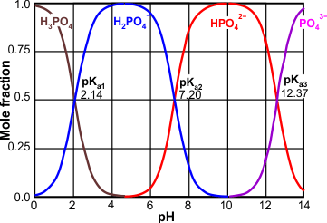</figure><p align="right">[H<sub>2</sub>PO<sub>4</sub><sup>&minus;</sup>] / [H<sub>3</sub>PO<sub>4</sub>] &asymp; 7.5   &#739; 10<sup>4</sup>&nbsp;&nbsp;&nbsp;&nbsp;&nbsp;&nbsp;&nbsp;&nbsp;&nbsp;&nbsp;&nbsp; &nbsp;&nbsp;&nbsp;&nbsp;&nbsp;&nbsp;&nbsp;&nbsp;&nbsp;&nbsp;&nbsp;&nbsp;&nbsp; &nbsp;&nbsp;&nbsp;&nbsp;&nbsp;&nbsp;&nbsp;&nbsp;&nbsp;&nbsp;&nbsp;</p>
    <p align="right">[HPO<sub>4</sub><sup>2&minus;</sup>] / [H<sub>2</sub>PO<sub>4</sub><sup>&minus;</sup>] &asymp; 0.62&nbsp;&nbsp;&nbsp;&nbsp;&nbsp;&nbsp;&nbsp;&nbsp;&nbsp;&nbsp;&nbsp;&nbsp;&nbsp;&nbsp;&nbsp; &nbsp;&nbsp;&nbsp;&nbsp;&nbsp;&nbsp;&nbsp;&nbsp;&nbsp;&nbsp;&nbsp;&nbsp;&nbsp;&nbsp;&nbsp;&nbsp; &nbsp;&nbsp;&nbsp;&nbsp;&nbsp;&nbsp;&nbsp;&nbsp;&nbsp;&nbsp;&nbsp;</p>
    <p align="right">[PO<sub>4</sub><sup>3&minus;</sup>] / [HPO<sub>4</sub><sup>2&minus;</sup>] &asymp; 2.14   &#739; 10<sup>&minus;</sup><sup>6&nbsp;&nbsp;&nbsp;&nbsp;&nbsp;&nbsp;&nbsp;&nbsp;&nbsp;&nbsp;&nbsp;&nbsp;&nbsp;&nbsp;&nbsp;&nbsp;&nbsp;&nbsp;&nbsp; &nbsp;&nbsp;&nbsp;&nbsp;&nbsp;&nbsp;&nbsp;&nbsp;&nbsp;&nbsp;&nbsp;&nbsp;&nbsp; &nbsp;&nbsp;&nbsp;&nbsp;&nbsp;&nbsp;&nbsp;&nbsp;&nbsp;&nbsp;&nbsp;</sup></p>
    <p>&nbsp; </p>
    <p>Sodium, potassium, rubidium, caesium,&nbsp;and ammonium phosphates are generally soluble, but phosphates of other cations are usually insoluble or only slightly soluble. Some  hydrogen phosphates, such as Ca(H<sub>2</sub>PO<sub>4</sub>)<sub>2</sub>, are soluble. Pure H<sub>3</sub>PO<sub>4</sub> dissociates very slightly to give the tetrahydroxy phosphonium cation and giving it a higher than expected conductivity, </p>
    <p>&nbsp;</p>
    <p align="center">2 H<sub>3</sub>PO<sub>4</sub>&nbsp; P(OH)<sub>4</sub><sup>+</sup>&nbsp;+ H<sub>2</sub>PO<sub>4</sub><sup>&minus;</sup>&nbsp;&nbsp;&nbsp;</p>
    <p >&nbsp;</p>
    <p > The hydrogen bond networks of aqueous H<sub>3</sub>PO<sub>4</sub> have been established over the entire concentration range, by suse of molecular dynamics simulations [<a href="ref43.html#r4229">4229</a><a name="r4229" id="r4229"></a>]. The hydrogen bond network of aqueous H<sub>3</sub>PO<sub>4</sub> was found to be fundamentally different from that of H<sub>2</sub>O, with each phosphoric acid molecule tending to form more and stronger hydrogen bonds than water leading to  much more connected and clustered networks. These hydrogen-bond networks  persist in the H<sub>3</sub>PO<sub>4</sub>/H<sub>2</sub>O mixtures even at relatively high water contents.</p>
    <p align="center">&nbsp;</p>
    <p align="center">On concentration of phosphoric acid, condensed linear polyphosphoric acids (H<sub>n+2</sub>P<sub>n</sub>O<sub>3n+1</sub>, n = 2 - 15) form by the loss of water molecules, e.g.,</p>
    <p>&nbsp;</p>
    <p align="center"> &nbsp;&nbsp;&nbsp;&nbsp;&nbsp;&nbsp;&nbsp;&nbsp;&nbsp;2 H<sub>3</sub>PO<sub>4</sub>&nbsp;(HO)<sub>2</sub>P(=O)OP(=O)(OH)<sub>2</sub>+ H<sub>2</sub>O &nbsp;&nbsp;&nbsp;&nbsp;&nbsp;&nbsp; &nbsp;&nbsp;&nbsp;&nbsp;&nbsp;&nbsp;&nbsp;&nbsp;&nbsp;&nbsp;&nbsp; &nbsp;&nbsp;&nbsp;&nbsp;&nbsp;&nbsp;&nbsp;&nbsp;&nbsp;&nbsp;&nbsp; &nbsp;&nbsp;&nbsp;&nbsp;&nbsp;&nbsp;&nbsp;&nbsp;&nbsp;&nbsp;&nbsp;&nbsp;&nbsp;&nbsp;pyrophosphoric acid </p>
    <p align="center">3 H<sub>3</sub>PO<sub>4</sub>&nbsp; (HO)<sub>2</sub>P(=O)OP(=O)(OH)OP(=O)(OH)<sub>2</sub>+ 2 H<sub>2</sub>O &nbsp;&nbsp;&nbsp;&nbsp;&nbsp;&nbsp; &nbsp;&nbsp;&nbsp;&nbsp;&nbsp;&nbsp;&nbsp;&nbsp;&nbsp; &nbsp;&nbsp;&nbsp;&nbsp;&nbsp;&nbsp;&nbsp;&nbsp;&nbsp;triphosphoric acid </p>
    <p align="center">4 H<sub>3</sub>PO<sub>4</sub>&nbsp; (HO)<sub>2</sub>P(=O)OP(=O)(OH)OP(=O)(OH)OP(=O)(OH)<sub>2</sub>+ 3 H<sub>2</sub>O &nbsp;&nbsp;&nbsp;&nbsp;&nbsp;&nbsp;&nbsp; &nbsp;&nbsp; tetraphosphoric acid </p>
    <figure  class="floatright">
      <figcaption>
        <p align="center">&nbsp;</p>
        <p align="center"><a name="tripp" id="tripp"></a>Pyrophosphoric acid (left) and triphosphoric acid</p>
        <p align="center">&nbsp;</p>
      </figcaption>
    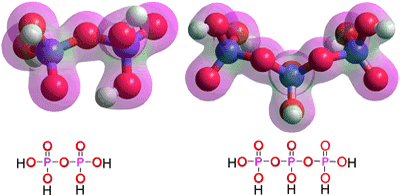</figure>
    <p align="left">&nbsp;</p>
    <p align="left">&nbsp;</p>
    <p align="left">Several different sets of p<em>K</em><sub>a</sub>'s for the polyphosphates have been suggested. Typically, pyrophosphate has two strongly acidic and two weakly acidic hydroxyl groups, p<em>K</em><sub>a1</sub> = -0.44, p<em>K</em><sub>a2</sub> = 2.64, p<em>K</em><sub>a3</sub> = 6.76 , p<em>K</em><sub>a4</sub> = 9.41, and triphosphate has three strongly acidic and two weakly acidic hydroxyl groups, p<em>K</em><sub>a1</sub> =  -0.51, p<em>K</em><sub>a2</sub> = 1.20, p<em>K</em><sub>a3</sub> = 2.30 , p<em>K</em><sub>a4</sub> = 6.50, p<em>K</em><sub>a5</sub> = 9.24. Each phosphorus atom has just a single strong acid hydroxyl group. Pyrophosphate (H<sub>4</sub>P<sub>2</sub>O<sub>7</sub>) (extremely) slowly hydrolyzes in dilute solution.</p>
    <p align="left">&nbsp;</p>
    <p align="left">In larger polyphosphates, each phosphorus atom bears a phosphonyl group (P=O) and a strongly acidic hydroxyl group. In addition, the two terminal P atoms of linear polyphosphates are each bonded to a second weakly acidic hydroxyl group. Cyclic metaphosphoric acids (HPO<sub>3</sub>)<sub>n</sub>  are formed from low-molecular polyphosphoric acids by ring closure. They generally have a comparatively small number of ring atoms (n = 3 - 8) with each  phosphorus  atom bound to one strongly acidic  hydroxyl group and one phosphonyl group (P=O). On concentration, these polyphosphates dehydrate further to form two-dimensional to three-dimensionally cross-linked, glassy metaphosphoric acid networks. </p> <figure  class="floatright">
      <figcaption>
	    <p align="center">Poly H<sub>2</sub>PO<sub>4</sub><sup>&minus;</sup></p>
        <p align="center">&nbsp;</p>
      </figcaption>
	  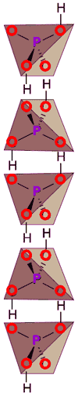</figure>
    <figure  class="floatleft">
      <figcaption>
        <p align="center">&nbsp;</p>
        <p align="center">Adenosine triphosphate, ATP<sup>4&minus;</sup> Mg<sup>2+</sup></p>
        <p align="center">&nbsp;</p>
      </figcaption>
    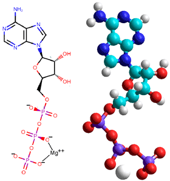</figure>
    <p align="left">&nbsp;</p>
    <p align="left">Despite their negagive charge, dihydrogen phosphates may form chains of hydrogen bonded molecules under some circumstances, see diagram right [<a title="go to cited reference" href="ref44.html#r4316">4316</a><a name="r4316" id="r4316"></a>]. Condensed phosphates may exist as linear (see ATP below), cyclic (see P<sub>4</sub>O<sub>10</sub> above) or branched structures (the ultraphosphates  [<a title="go to cited reference"  href="ref44.html#r4325">4325</a><a name="r4325" id="r4325"></a>]). </p>
    <p align="left">&nbsp;</p>
    <p align="left">Phosphate esters and anhydrides are key to much of metabolic biochemistry. They are relatively stable, except in the presence of specific enzymes that  use their negative charge in their specificity. <sup><a href="#b" name="bb" id="bb">b</a></sup> They can link nucleotides whilst retaining their negative charge, so stabilizing the diesters against random hydrolysis and enabling them to be retained by membrane barriers. </p>
    <p align="left">&nbsp;</p>
    <p align="left">The genetic materials <a href="nucleic_acid_hydration.html">DNA and RNA </a>are phosphodiesters, and ATP (see left) is life's energy currency. Many intermediary metabolites (e.g.,  creatine phosphate, glucose-6-phosphate, phosphoenolpyruvate) are phosphate esters,  phosphates, or pyrophosphates and are essential  in biochemical syntheses and degradations.</p>
    <p align="left">&nbsp;</p>
    <p align="left">ATP has p<em>K</em><sub>a</sub> values of 0.9, 1.5, 2.3, and 7.7 (three strong and one weak acid). in contrast, ADP&nbsp;has p<em>K</em><sub>a</sub> values of 0.9, 2.8, and 6.8 (two strong and one weak acid), both ignoring the basicity of the amino group on the adenine group (p<em>K</em><sub>a</sub> ~ 4.15 ) and the acidity of the hydroxyl group on the ribose group (p<em>K</em><sub>a</sub> = 12.98)<sup><a href="#e" name="be" id="be">e</a></sup>.    </p>
    <h2><a name="h3po3" id="h3po3"></a>Phosphorous acid</h2>
    <p>Phosphorous acid, HPO(OH)<sub>2</sub> (usually shown as H<sub>3</sub>PO<sub>3</sub>, melting point 73.6&nbsp;&deg;C, boiling point   200&nbsp;&deg;C with decomposition, density  1651  kg  &#739; m<sup>&minus;3</sup>), is prepared by the&nbsp;hydrolysis&nbsp;of&nbsp;phosphorus trichloride&nbsp;with water or steam or the hydration of phosphorus trioxide (P<sub>4</sub>O<sub>6</sub>), <sup><a href="#d" name="bd" id="bd">d</a></sup> </p>
    <p align="center">PCl<sub>3 </sub>+ 3&nbsp;H<sub>2</sub>O &rarr; HPO(OH)<sub>2</sub>&nbsp;+ 3&nbsp;HCl </p>
    <p align="center">P<sub>4</sub>O<sub>6</sub> <sub> </sub>+ 6&nbsp;H<sub>2</sub>O &rarr; 4 HPO(OH)<sub>2</sub> </p>
    <p align="center">&nbsp;</p>
    <p>When burnt with a restrictive oxygen supply, white phosphorus forms phosphorus trioxide (see <a href="#p4o6">above left</a>, which slowly oxidized to phosphorus pentoxide by air at room temperature. Phosphorus trioxide disproportionates&nbsp;above 210&nbsp;&deg;C to form the linear diphosphorus tetraoxide (P<sub>2</sub>O<sub>4</sub>, OPOPO<sub>2</sub>. the mixed anhydride of phosphonic and orthophosphoric acid),</p>
    <p>&nbsp;</p>
    <p align="center">2 P<sub>4</sub>O<sub>6</sub> <sub> </sub>&rarr; 3 P<sub>2</sub>O<sub>4</sub> +2 P</p>
    <p align="right">&nbsp;P<sub>4</sub> (white) + 3 O<sub>2 </sub>&rarr; P<sub>4</sub>O<sub>6</sub>&nbsp;&nbsp;&nbsp;&nbsp;&nbsp;&nbsp;&nbsp;&nbsp;&nbsp;&nbsp;&nbsp;&nbsp;&nbsp;&nbsp;&nbsp;&nbsp;&nbsp;&nbsp;&nbsp;&nbsp;&nbsp;&nbsp;&nbsp;&nbsp;&nbsp;&nbsp;&nbsp;&nbsp;&nbsp;&nbsp;&nbsp;&nbsp;&nbsp;&nbsp;&nbsp;&nbsp;&nbsp;&nbsp;&nbsp;&nbsp;&nbsp;&nbsp;&nbsp;&nbsp;&Delta;H&deg; = &nbsp;&ndash;1646&nbsp;k<a href="constants.html#J"   title="constants.html#joule">J</a> &#739; mol<sup>&minus;1</sup> <sup> <a href="#d"> d</a> &nbsp;&nbsp;</sup></p>
    <p align="center"> P<sub>2</sub>O<sub>4</sub> <sub> </sub>+ 3 H<sub>2</sub>O &rarr;  HPO(OH)<sub>2</sub> +  H<sub>3</sub>PO<sub>4</sub></p>
    <p align="center">&nbsp;</p>
    <p>Phosphorous acid has two acidic groups, one strong and one weak, giving rise to the phosphites (properly called the phosphonates). </p>
    <p align="right">H<sub>3</sub>PO<sub>3</sub>&nbsp;+ H<sub>2</sub>O  H<sub>3</sub>O<sup>+</sup>&nbsp;+ H<sub>2</sub>PO<sub>3</sub><sup>&minus;</sup>&nbsp;&nbsp;&nbsp;&nbsp;&nbsp;&nbsp;&nbsp;&nbsp;&nbsp;&nbsp;&nbsp; &nbsp;&nbsp;&nbsp;&nbsp;&nbsp;&nbsp;&nbsp;&nbsp;&nbsp;&nbsp;&nbsp;&nbsp; &nbsp;&nbsp;&nbsp;&nbsp;&nbsp;&nbsp;&nbsp;&nbsp;&nbsp;&nbsp;p<em>K</em><sub>a1</sub> = 1.3 &nbsp;&nbsp;&nbsp;</p>
    <p align="right"> H<sub>2</sub>PO<sub>3</sub><sup>&minus;</sup> + H<sub>2</sub>O  H<sub>3</sub>O<sup>+</sup>&nbsp;+ HPO<sub>3</sub><sup>2&minus;</sup>&nbsp;&nbsp;&nbsp;&nbsp;&nbsp;&nbsp;&nbsp;&nbsp;&nbsp;&nbsp;&nbsp; &nbsp;&nbsp;&nbsp;&nbsp;&nbsp;&nbsp;&nbsp;&nbsp;&nbsp;&nbsp;&nbsp;&nbsp;&nbsp; &nbsp;&nbsp;&nbsp;&nbsp;&nbsp;&nbsp;&nbsp;&nbsp;&nbsp;p<em>K</em><sub>a2</sub>&nbsp;= 6.7&nbsp;&nbsp;&nbsp;&nbsp;</p>
    <p align="left">&nbsp;</p>
    <p align="left">A small proportion of HPO(OH)<sub>2</sub> reversibly forms P(OH)<sub>3</sub>. </p>
    <p align="left">&nbsp;</p>
    <p align="center">HPO(OH)<sub>2</sub>P(OH)<sub>3</sub></p>
    <figure  class="floatleft">
      <figcaption>
        <p align="center">Phosphine</p>
        <p align="center">&nbsp;</p>
      </figcaption>
    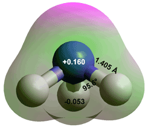</figure>
    <p>&nbsp;</p>
    <p>Phosphine (PH<sub>3</sub>, see trigonal structure left and <a href="aqueous_ammonia.html">compare with NH<sub>3</sub></a>) is prepared by disproportionating phosphorous acid at around 200&nbsp;&deg;C. Phosphine is structurally similar to <a href="aqueous_ammonia.html">ammonia </a>(NH<sub>3</sub>), but phosphine  (melting point -133.8&nbsp;&deg;C, boiling point   -87.8&nbsp;&deg;C, density  569  kg  &#739; m<sup>&minus;3</sup> when liquid at 21&nbsp;&deg;C) is odorless, flammable, corrosive, toxic, much less polar (with opposite polarity), and less soluble in water. Particularly notable is that the P atom is slightly positively charged in PH<sub>3</sub>, compared with the substantial negative charge on ammonia's N atom due to the difference in  N (3.04) and P (2.19) electronegativities . </p>
    <p>&nbsp;</p>
    <p align="right"> 4 H<sub>3</sub>PO<sub>3</sub>&nbsp;&rarr; PH<sub>3</sub>&uarr; 
      + 3 H<sub>3</sub>PO<sub>4</sub> &nbsp; &nbsp;&nbsp;&nbsp;&nbsp;&nbsp; &nbsp;&nbsp;&nbsp;&nbsp;&nbsp;&nbsp;&nbsp;&nbsp;&nbsp;&nbsp;&nbsp;&nbsp;&nbsp;&nbsp;&nbsp; &nbsp;&nbsp;&nbsp;&nbsp;~200&nbsp;&deg;C&nbsp;&nbsp;</p>
    <p align="left">&nbsp;</p>
    <p align="left">Unlike NH<sub>3</sub>, PH<sub>3</sub> is not basic. It only forms very weak hydrogen bonds
      as its P-H bonds are nonpolar. It has been supposedly found in the atmosphere of Venus, where it  has been taken, by some, as a possible sign of life. <sup><a href="#l" name="bl" id="bl">l</a></sup></p>
    <h2><a name="h3po2" id="h3po2"></a>Phosphinic acid</h2>
    <p align="left">Phosphinic acid H<sub>3</sub>PO<sub>2</sub> (hypophosphorous acid, H<sub>2</sub>(PO)OH, density  1493  kg  &#739; m<sup>&minus;3</sup>, melting point 26.5&nbsp;&deg;C, boiling point   130&nbsp;&deg;C with decomposition) is prepared by the reaction of white phosphorus with a hot aqueous solution of an appropriate hydroxide, e.g., Ca(OH)<sub>2</sub></p>
    <p align="left">&nbsp;</p>
    <p align="center">2 P<sub>4</sub> + 3 Ca(OH)<sub>2</sub> + 6 H<sub>2</sub>O &rarr; PH<sub>3</sub> + 3 Ca(H<sub>2</sub>PO<sub>2</sub>)<sub>2</sub></p>
    <p align="center">Ca(H<sub>2</sub>PO<sub>2</sub>)<sub>2</sub> + H<sub>2</sub>SO<sub>4</sub> &rarr; CaSO<sub>4</sub> + 2 H<sub>3</sub>PO<sub>2</sub></p>
    <p align="center">&nbsp;</p>
    <p align="left">Phosphinic acid  gives rise to the hypophosphites (properly called the phosphinates). A small proportion of H<sub>3</sub>PO<sub>2</sub> reversibly forms phosphinous acid, HP(OH)<sub>2</sub>, </p>
    <p align="center">H<sub>2</sub>(PO)OH  HP(OH)<sub>2</sub></p>
    <p align="center">&nbsp;</p>
    <p align="left">Phosphinic acid has a single ionizable strong acid group,</p>
    <p align="left">&nbsp;</p>
    <p align="right">H<sub>3</sub>PO<sub>2</sub>&nbsp;+ H<sub>2</sub>O  H<sub>3</sub>O<sup>+</sup>&nbsp;+ H<sub>2</sub>PO<sub>2</sub><sup>&minus;</sup>&nbsp;&nbsp;&nbsp;&nbsp;&nbsp;&nbsp;&nbsp;&nbsp;&nbsp;&nbsp;&nbsp; &nbsp;&nbsp;&nbsp;&nbsp;&nbsp;&nbsp;&nbsp;&nbsp;&nbsp;&nbsp;&nbsp;&nbsp; &nbsp;&nbsp;&nbsp;&nbsp;&nbsp;&nbsp;&nbsp;&nbsp;&nbsp;&nbsp;p<em>K</em><sub>a</sub> = 1.2 &nbsp;&nbsp;</p>
    <p>&nbsp;</p>
    <p>Hypophosphites are&nbsp;reducing agents, giving phosphorous acid,</p>
    <p>&nbsp;</p>
    <p align="right">&nbsp;HPO<sub>3</sub><sup>2&minus;</sup>&nbsp;+ 2 H<sub>2</sub>O + 2 e<sup>&minus;</sup>&nbsp; H<sub>2</sub>PO<sub>2</sub><sup>&minus;</sup>&nbsp;+ 3 OH<sup>&minus;</sup> &nbsp; &nbsp; &nbsp; &nbsp; &nbsp; &nbsp; &nbsp; &nbsp; &nbsp; &nbsp; &nbsp; &nbsp; &nbsp;&nbsp;&nbsp; &nbsp; &nbsp; &nbsp; &nbsp; &nbsp; &nbsp; &nbsp;&nbsp;<em>E</em>&deg; = -1.65 V &nbsp;&nbsp;</p>
    <p align="left">&nbsp;</p>
    <p align="left">The redox series for the phosphorus acids is given below. The missing compound (H<sub>3</sub>PO, oxidation state -1, phosphine oxide) is unstable forming PH<sub>3</sub> and H<sub>3</sub>PO<sub>2</sub> acid  even at low temperature, </p>
    <p align="left">&nbsp;</p>
    <p align="center">2 H<sub>3</sub>PO  &rarr; PH<sub>3</sub> + H<sub>3</sub>PO<sub>2</sub></p>
    <p align="left">. </p>
    <p align="center" class="style15">The redox series for the phosphorus acids</p>
    <p align="center" class="style15">&nbsp;</p>
    <p align="center">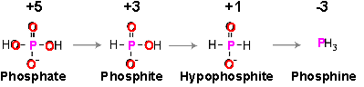</p>
    <p align="right">[<a title="go to top of page" href="#top"><span class="style16">Back to Top&nbsp;</span></a>] </p>
    <div   class="floatright" style="width:360px;">
      <figure  class="floatright">
        <figcaption>
          <p align="center">&nbsp;</p>
          <p align="center"><a name="crys" id="crys"></a>Hydroxyapatite,</p>
          <p align="center"> does not possess long-range order</p>
          <p align="center">&nbsp;</p>
        </figcaption>
        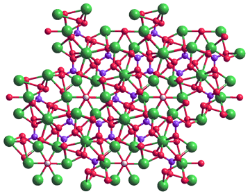</figure>
      <p align="left" class="style16">The small white hydroxide ions are located in hexagonal channels (down  the c-axis, seen bottom left)  and surrounded by calcium ions, shown green. These hydroxyl ion channels, running straight through the center of the basal plane of its hexagonal lattice,  are partially responsible for  hydroxyapatite's  useful properties. <sup><a href="#k" name="bk" id="bk">k</a></sup> These hexagonally-placed Ca<sup>2+</sup> ions supposedly prevent any interfacial     water molecules from forming hydrogen   bonds with the hydroxide ions<sup>.<a href="#f" name="bf" id="bf">f</a></sup> The 'crystals' grow fastest along the  c-axis. Spherical (distorted, ~ 9 nm) Posner clusters,<sup><a href="#h" name="bh" id="bh">h,</a></sup><sup><a href="#i" name="bi" id="bi">i</a></sup> Ca<sub>3</sub>Ca<sub>6</sub>(PO<sub>4</sub>)<sub>6</sub> (as stable stand-alone particles, see structure below) start new hydroxyapatite crystal formation and surround the hexagonal channels. Their central linear, triple calcium ions  (Ca<sub>3</sub>), go backward giving a three-fold rotation axis parallel to the c-axis. A phosphate ion phosphorus atom is placed approximately at the vertices of an octahedron, with 8 Ca<sup>2+</sup> ions placed on the 8 external faces of this octahedron (forming a distorted cube, similar to the   diamond structure) and the remaining ninth Ca<sup>2+</sup> ion placed centrally. The ionic structure is somewhat irregular and does not form a stable regular cube or regular octahedron on relaxation<em> in vacuo</em>, which may well prevent  long-range ordering. It  hydrates well in aqueous solutions, and this tends to enable its retention of a more regular structure.</p>
      <figure  class="floatleft">
        <figcaption>
          <p align="center">&nbsp;</p>
          <p align="center">Posner's cluster,</p>
          <p align="center">aggregates randomly in solution as <span class="style16">Ca<sub>3</sub>Ca<sub>6</sub>(PO<sub>4</sub>)<sub>6</sub></span>.30H<sub>2</sub>O</p>
          <p align="center">&nbsp;</p>
        </figcaption>
      <a onmouseout="mm_swapImgRestore()" onmouseover="mm_swapImage('posner','','images/posner.gif',1)"> 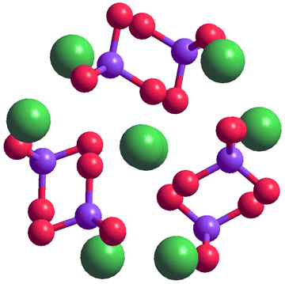</a> </figure>
    </div>
    <h2><a name="hap" id="hap"></a>Hydroxyapatite and bone</h2>
    <p>Amorphous calcium phosphates have variable chemical but essentially identical glass-like physical properties.<sup><a href="#j" name="bj" id="bj">j</a></sup> Hydroxyapatite Ca<sub>10</sub>(PO<sub>4</sub>)<sub>6</sub>(OH)<sub>2</sub> (HAP, hydroxylapatite) embedded in a matrix of collagen makes up an essential part of  human bones (in the form of ~5 nm thick and 20 nm long platelets) and teeth (the enamel is made up of hydroxyapatite rods ~ 20 - 40 nm in diameter). It is the most abundant inorganic material in our bodies (~10% by weight) after water  (~60% by weight) and can be made chemically from lime (calcium hydroxide) and phosphoric acid,</p>
    <p>&nbsp;</p>
    <p align="center">10 Ca(OH)<sub>2</sub>&nbsp;+ 6 H<sub>3</sub>PO<sub>4</sub>&nbsp; &rarr; Ca<sub>10</sub>(PO<sub>4</sub>)<sub>6</sub>(OH)<sub>2</sub>&darr;+ 18 H<sub>2</sub>O</p>
    <p align="center">&nbsp;</p>
	  <p align="left">precipitating as the amorphous form before conversion to pseudo-hexagonal crystals (<em>P</em>6<sub>3</sub>/<em>m, </em> a = b = 9.432 &Aring;, c = 6.881 &Aring;). <span class="style4"><sup><a href="#g" name="bg" id="bg">g</a></sup></span> In biological systems, there is a large drop in pH.</p>
    <p align="left">&nbsp;</p>
	  <p align="center">10 Ca<sup>2+</sup>&nbsp;+ 6 HPO<sub>4<sup>2&minus;</sup></sub>&nbsp;+ 10 H<sub>2</sub>O &rarr; Ca<sub>10</sub>(PO<sub>4</sub>)<sub>6</sub>(OH)<sub>2</sub> + 8 H<sub>3</sub>O<sup>+</sup></p>
	  <p align="left">&nbsp;</p>
	  <p align="left">This acidity may be compensated by other reactions, such as the conversion of monoclinic tetracalcium phosphate (TTCP, Ca<sub>4</sub>(PO<sub>4</sub>)<sub>2</sub>O) to hydroxyapatite, <sup><a href="#n" name="bn" id="bn">n</a></sup></p>
	  <p align="left">&nbsp;</p>
	  <p align="center">3 Ca<sub>4</sub>(PO<sub>4</sub>)<sub>2</sub>O + 3 H<sub>2</sub>O &rarr; Ca<sub>10</sub>(PO<sub>4</sub>)<sub>6</sub>(OH)<sub>2</sub> + 2 Ca<sup>2+</sup> + 4 OH<sub><sup>&minus;</sup></sub>	  </p>
	  <p align="left">Apatites (Ca<sub>5</sub>(P0<sub>4</sub>)<sub>3</sub>X, where X = OH<sup>&minus;</sup>, F<sup>&minus;</sup>, Cl<sup>&minus;</sup>, etc.) form a family of compounds with a wide range of components with similar hexagonal structures. The exact structures of biological apatites remain undefined with Ca:P molar ratios ranging from 1.5 to 1.66, and they contain other materials such as the  partial replacement of Ca<sup>2+</sup> by Mg<sup>2+</sup>, OH<sup>&minus;</sup> by  F<sup>&minus;</sup>, or PO<sub>4<sup>3&minus;</sup></sub>  by CO<sub>3<sup>2&minus;</sup></sub>. Thus, its calcium-deficient and partially carbonated form</p>
	  <p align="center">
	    (Ca,Z)<sub>10</sub>(PO<sub>4</sub>,Y)<sub>6</sub>(OH,X)<sub>2</sub> </p>
    <p align="left">&nbsp;</p>
	  <p align="left">(where Z = Na<sup>+</sup>,  K<sup>+</sup>, Mg<sup>2+</sup>, Sr<sup>2+</sup>, etc., Y = CO<sub>3<sup>2&minus;</sup></sub>, HPO<sub>4<sup>2&minus;</sup></sub>, and X = Cl<sup>&minus;</sup>, F<sup>&minus;</sup>) is found in bone. The cleaved and crystal surfaces of hydroxyapatite are hygroscopic and immediately attract water and carbon dioxide from the atmosphere. </p>
    <p align="left">&nbsp;</p>
    <p align="left">Hydroxyapatite has a high nucleation rate at  low super-saturation (favoring ultrafine particles). However, it then has an accommodating and low crystal growth rate favoring a versatile microstructure with varying 'defects' (e.g., making it hydrophobic or hydrophilic), giving it great utility in supporting  life and acting as a metabolic reservoir for mineral ions. The dominant mode of growth is different on different crystal faces and is dependent on the crystallographic direction of growth. <sup><a href="#m" name="bm" id="bm">m</a></sup></p>
    <p align="left">&nbsp;</p>
    <p align="left">Hydroxyapatites  are formed from calcium and phosphate ions that are abundant in bodily fluids and can quickly be built up, broken down, and repaired on demand. Like <a href="memory_of_water.html">water</a>, hydroxyapatite has a memory in so far as the history of its formation affects its properties. Hydroxyapatite's interaction with biological molecules depends on their surface exposure and chemistry. </p>
    <figure  class="floatleft">
      <figcaption>
        <p align="center">&nbsp; </p>
        <p align="center">Posner's cluster geometry</p>
      </figcaption>
      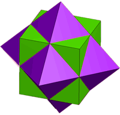</figure>
    <p align="left">&nbsp;</p>
    <p align="left">Bone is a nanocomposite with hydroxyapatite nanoparticles held within a collagen protein matrix, both extending throughout the whole shape and the whole saturated with essential and active water (10-20% by weight) provided by pores down to 5 nm in size. The nanoparticles consist of 50-150 nm thick stacks of 2.5-4 nm thick crystal platelets, arranged with their flat faces parallel and their c-axes parallel to the collagen fibrils. Chiral Posner&rsquo;s clusters (see right, <span class="style16">Ca<sub>3</sub>Ca<sub>6</sub>(PO<sub>4</sub>)<sub>6</sub></span> ) are found within the crystal structure of hydroxyapatite  Ca<sub>10</sub>(PO<sub>4</sub>)<sub>6</sub>(OH)<sub>2</sub> with the addition of a <span class="style16">Ca<sup>2+</sup></span> ion and two hydroxide ions. There is little doubt that these biocompatible and antibacterial clusters are intimately concerned with bone metabolism. However, although the clusters are found intact and achiral <em>in vitro</em>, modeling within water fails to confirm this. </p>
    <p align="left">&nbsp;</p>
    <p align="left">Water is  bound to the crystal surfaces and connects between the collagen helices, with a high amount of bound water ndicating good bone quality. The strength of bones is derived  from a hierarchical organization  of coupled hydroxyapatite and collagen across length scales spanning from nm to cm [<a  href="ref43.html#r4275" name="r4275" title="go to cited reference" id="r4275">4275</a>]. Water is the essential 'glue'  for this integration of strong mineral hydroxyapatite with its reinforcing rods of flexible collagen polymer. As a result, bones are lightweight, strong, and stiff. Without the collagen (by baking), the bone would be very brittle, and without the calcium phosphate (by dissolving in dilute acid), the bone would be soft and bendable. </p>
    <p align="left">&nbsp;</p>
    <p align="center">Ca<sub>10</sub>(PO<sub>4</sub>)<sub>6</sub>(OH)<sub>2</sub> + 14 H<sub>3</sub>O<sup>+</sup> &rarr; 10 Ca<sup>2+</sup> + 6 H<sub>2</sub>PO<sub>4</sub><sup>&minus;</sup> + 16 H<sub>2</sub>O</p>
    <p align="left">&nbsp;</p>
    <p align="left">Bone growth and repair is contolled by cells, including the osteoblasts and osteocytes. There is a regulated balance of activity (homeostasis) between bone-&#8203;forming osteoblasts that also secrete extracellular matrix proteins such as type I collagen and bone-resorbing osteoclasts. <sup><a href="#o" name="bo" id="bo">o</a></sup>    </p>
    <p align="right">[<a title="go to top of page" href="#top"><span class="style16">Back to Top&nbsp;</span></a>]</p>
    <div style=" float:none; clear:both;"></div>
    <hr />
    <h2>Footnotes</h2>
    <p><a name="a" id="a"></a><sup>a</sup> K. Schr&ouml;dter, G. Betttermann, T. Saffel, F. Wahl, T.Klein and T. Hofmann, Phosphoric acid and phosphates, <em>Ullmann's Encyclopedia of Industrial Chemistry</em>, Wiley-VCH Verlag GmbH &amp; Co. KGaA, Weinheim, vol <strong>26</strong> (2015)  DOI: 10.1002/14356007.a19_465.pub3. [<a title="click for an explanation" href="#ba"><span title="go back to the text">Back</span></a>] </p>
    <p>&nbsp;</p>
    <p><a name="b" id="b"></a><sup>b</sup> F. H. Westheimer, Why nature chose phosphates, <em>Science,</em> <strong>235</strong>, (1987) 1173-1178. [<a title="click for an explanation" href="#bb"><span title="go back to the text">Back</span></a>] </p>
    <p>&nbsp;</p>
    <p><a name="c" id="c"></a><sup>c</sup> I.-H. Jung and P. Hudon, Thermodynamic assessment of P<sub>2</sub>O<sub>5</sub>, <em>Journal of the American Ceramic Society</em>, (2012) 1-8, DOI: 10.1111/j.1551-2916.2012.05382.x. [<a title="click for an explanation" href="#bc"><span title="go back to the text">Back</span></a>] </p>
    <p>&nbsp;</p>
    <p><a name="d" id="d"></a><sup>d</sup> G. Bettermann, W. Krause, G. Riess and T. Hofmann, Phosphorus compounds, Inorganic, <em>Ullmann's Encyclopedia of Industrial Chemistry</em>, Wiley-VCH Verlag GmbH &amp; Co. KGaA, Weinheim, vol <strong>27</strong> (2012)  DOI: 10.1002/14356007.a19_527. [<a title="click for an explanation" href="#bd"><span title="go back to the text">Back</span></a>] </p>
    <p>&nbsp;</p>
    <p><a name="e" id="e"></a><sup>e</sup> H. &Aring;str&ouml;m, E. Lim&eacute;n and R. Str&ouml;mberg, Acidity of secondary hydroxyls in ATP and adenosine analogues and the question of a 2',3'-hydrogen bond in ribonucleosides, <em>Journal of the American Chemical Society</em>, <strong>126</strong> (2004) 14710-14711. [<a title="click for an explanation" href="#be"><span title="go back to the text">Back</span></a>]</p>
    <p>&nbsp;</p>
    <p><a name="f" id="f"></a><sup>f</sup> D. Zahn and O. Hochrein, Computational study of interfaces between hydroxyapatite and water, <em>Physical Chemistry Chemical Physics</em>, <strong>5</strong> (2003) 4004-4007. [<a title="click for an explanation" href="#bf"><span title="go back to the text">Back</span></a>] </p>
    <p>&nbsp;</p>
    <p><a name="g" id="g"></a><sup>g</sup> M. I. Kay, R. A Young and A. S. Posner, Crystal structure of hydroxyapatite, <em>Nature</em>, <strong>204</strong> (1964) 1050-1052. [<a title="click for an explanation" href="#bg"><span title="go back to the text">Back</span></a>] </p>
    <p>&nbsp;</p>
    <p><a name="h" id="h"></a><sup>h</sup> L. Wang, S. Li, E. Ruiz-Agudo, C. V. Putnis and A. Putnis, Posner&rsquo;s cluster revisited: direct imaging of nucleation and growth of nanoscale calcium phosphate clusters at the calcite-water interface, <em>CrystEngComm</em>, <strong>14 </strong>(2012) 6252-6256; M. W. Swift and M. P. A. Fisher, Posner molecules: From atomic structure to nuclear spins, <em>Physical Chemistry Chemical Physics</em>, <strong>20</strong> (2018) 12373-12380. [<a title="click for an explanation" href="#bh"><span title="go back to the text">Back</span></a>] </p>
    <p>&nbsp;</p>
    <p><a name="i" id="i"></a><sup>i</sup> G. Mancardi,  C. E. H. Tamargo, D. Di Tommaso  and N. H. de Leeuw, Detection of Posner&rsquo;s clusters during calcium phosphate nucleation: a molecular dynamics study, <em>Journal of Materials Chemistry B</em>, <strong>5</strong> (2017) 7274-7284. [<a title="click for an explanation" href="#bi"><span title="go back to the text">Back</span></a>] </p>
    <p>&nbsp;</p>
    <p><a name="j" id="j"></a><sup>j</sup> S. V. Dorozhkin. Amorphous calcium (ortho)phosphates, <em>Acta Biomaterialia</em>, <strong>6</strong> (2010) 4457-4475; S. V. Dorozhkin, Calcium orthophosphates (CaPO<sub>4</sub>): occurrence and properties, <em>Morphologie</em>, <strong>101</strong> (2017) 125-142. [<a title="click for an explanation" href="#bj"><span title="go back to the text">Back</span></a>]</p>
    <p>&nbsp;</p>
    <p><a name="k" id="k"></a><sup>k</sup> V. Uskokovi&#263;, The role of hydroxyl channel in defining selected physicochemical peculiarities exhibited by hydroxyapatite, <em>Royal Society of  Chemistry Advances</em>, <strong>5</strong> (2015) 36614-36633. [<a title="click for an explanation" href="#bk"><span title="go back to the text">Back</span></a>]</p>
    <p>&nbsp;</p>
    <p><a name="l" id="l"></a><sup>l</sup> J. S. Greaves, A. M. S. Richards, W. Bains, P. B. Rimmer, H. Sagawa&#8202;,  D. L. Clements, S. Seager&#8202;, J. J. Petkowski, C. Sousa-Silva, S. Ranjan,  E. Drabek-Maunder, H. J. Fraser, A. Cartwrigh, I. Mueller-Wodarg,  Z. Zhan, P. Friberg, I. Coulson, E. Lee and J. Hoge. Phosphine gas in the cloud decks of Venus,<em> Nature Astronomy</em>,  (2020)  Article in press, DOI: 10.1038/s41550-020-1174-4;<span class="style6"> but see Editors cautionary note, 20 Nov</span> and; A. P. Lincowski <em>et al</em>, Claimed detection of PH<sub>3</sub> in the clouds of Venus is consistent with mesospheric SO<sub>2</sub>, arXiv:2101.09837v1 [astro-ph.EP] 25 Jan 2021. [<a title="click for an explanation" href="#bl"><span title="go back to the text">Back</span></a>]</p>
    <p>&nbsp; </p>
    <p><a name="m" id="m"></a><sup>m</sup> V, Uskokovic&#769;, Disordering the disorder as the route to a higher order: Incoherent crystallization of calcium phosphate through amorphous precursors, <em>Crystal Growth &amp; Design</em>,  <strong>20</strong> (2019) 4340-4357. [<a title="click for an explanation" href="#bm"><span title="go back to the text">Back</span></a>]</p>
    <p>&nbsp; </p>
    <p><a name="n" id="n"></a><sup>n</sup> V, Uskokovic&#769; and D. P. Uskokovic&#769;, Nanosized hydroxyapatite and other calcium phosphates: Chemistry of formation and application as drug and gene delivery agents, <em>Journal of Biomedical Materials research. Part B, Applied Biomaterials, </em><strong>96</strong> (2011) 152-191 DOI: 10.1002/jbm.b.31746.  [<a title="click for an explanation" href="#bn"><span title="go back to the text">Back</span></a>]</p>
    <p>&nbsp;</p>
    <p><sup><a  name="o" id="o">o</a></sup> A. Salhotra, H. N. Shah, B. Levi and M. T. Longaker, Mechanisms of bone development and repair, Nature Reviews, Molecular Cell Biology, <strong data-test="journal-volume">21</strong> (2020) 696-711. [<a title="click for an explanation" href="#bo"><span title="go back to the text">Back</span></a>]    </p>
    <p>&nbsp;</p>
    <p><sup><a  name="p1" id="p1">p</a></sup> The third dissociation constant of phosphoric acid in H<sub>2</sub>O and D<sub>2</sub>O from 75 to 300&nbsp;&deg;C has been reported [<a  href="ref43.html#r4251" name="r4251" title="go to cited reference" id="r4251">4251</a>]. [<a title="click for an explanation" href="#bp"><span title="go back to the text">Back</span></a>]</p>
    <p align="right">[<a title="go to top of page" href="#top"><span class="style16">Back to Top&nbsp;</span></a>]</p>
    <div class="spacer"></div>
  </div>
</div>
<div style="width:761px; background-color:#006868;padding-top:0px;padding-bottom:3px;border:0px;">
  <div style="width:753px; background-image:url('images/bg2.gif');padding-left:2px;border:0px;padding-top:0px;padding-bottom:0px;background-color:#D8F0d8;">
    <p align="center"><span class="style3"><a title="Home page" href="index.html">Home</a> | <a title="go to our 'Site index'" href="water_structure_science.html" accesskey="I">Site Index </a>| <a title="go to more on polysaccharide hydration" href="aqueous_h2s.html">Aqueous H<sub>2</sub>S</a> | <a href="aqueous_hydrogen_halides.html" title="more on protein hydration" >Aqueous hydrogen halides</a> | <a title="go to find more information"  href="aqueous_ammonia.html">Aqueous ammonia </a>| <a title="go to find more information"  href="aqueous_borate.html">Aqueous borate </a>|<a href="http://www.lsbu.ac.uk/" ><abbr title="London South Bank University"> LSBU</abbr></a> | <a title="go to top of page" href="#top">Top</a></span></p>
    <p align="center"><span class="style3">This page was established in 2020 and  last updated 
      by <a title="email me" href="mailto:martin.chaplin@btinternet.com?subject=from_water_web_site">Martin Chaplin</a> on 
      <!-- #BeginDate format:Sw1 -->15 November, 2021<!-- #EndDate --> 
      </span></p>
    <br />
    <div class="floatleft" style="width:320px;">
      <div align="right"><a rel="license" href="https://creativecommons.org/licenses/by-nc-nd/2.0/uk/"></a></div>
    </div>
    <span class="style4">This work is licensed under a <a rel="license" href="https://creativecommons.org/licenses/by-nc-nd/2.0/uk/">Creative Commons Attribution<br />
    -Noncommercial-No Derivative Works 2.0 UK: England &amp; Wales License</a></span>
    <div class="spacer"></div>
  </div>
</div>
</body>
</html>
